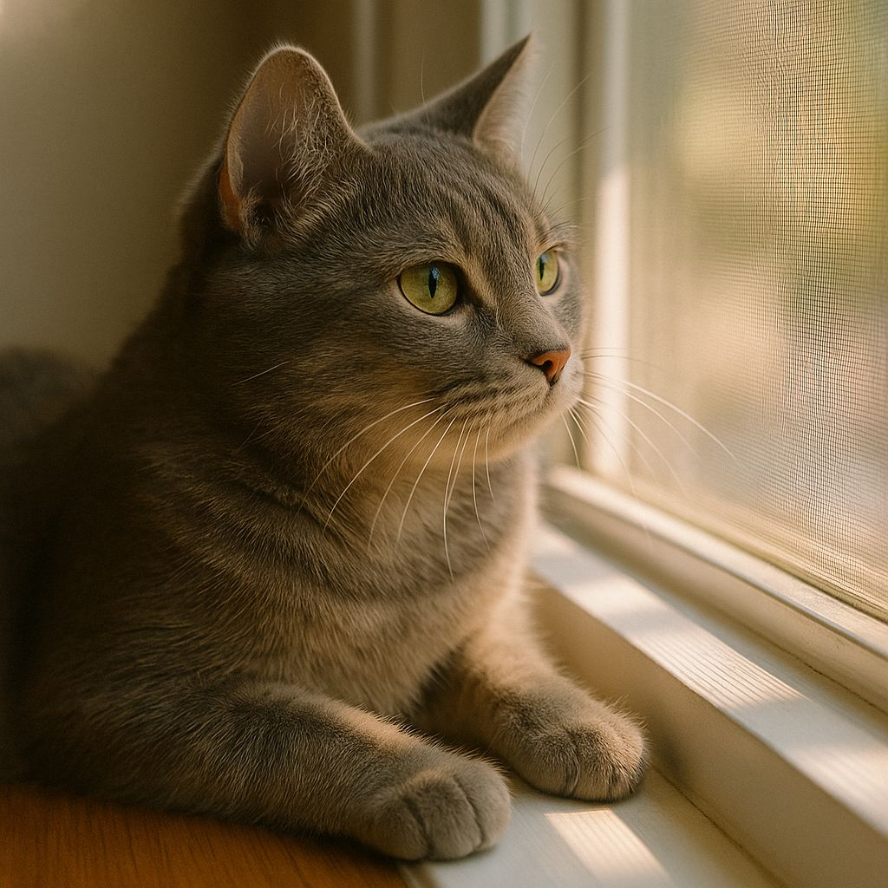
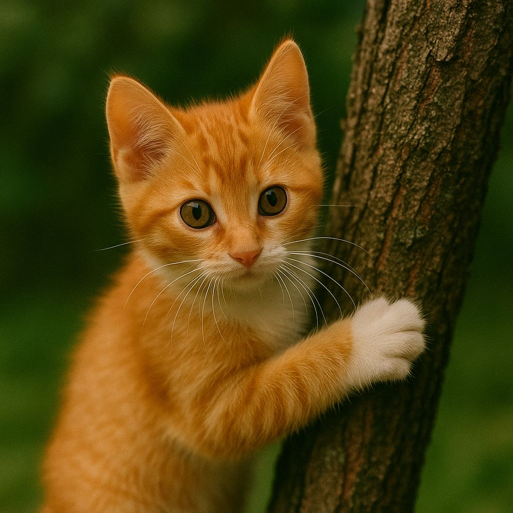
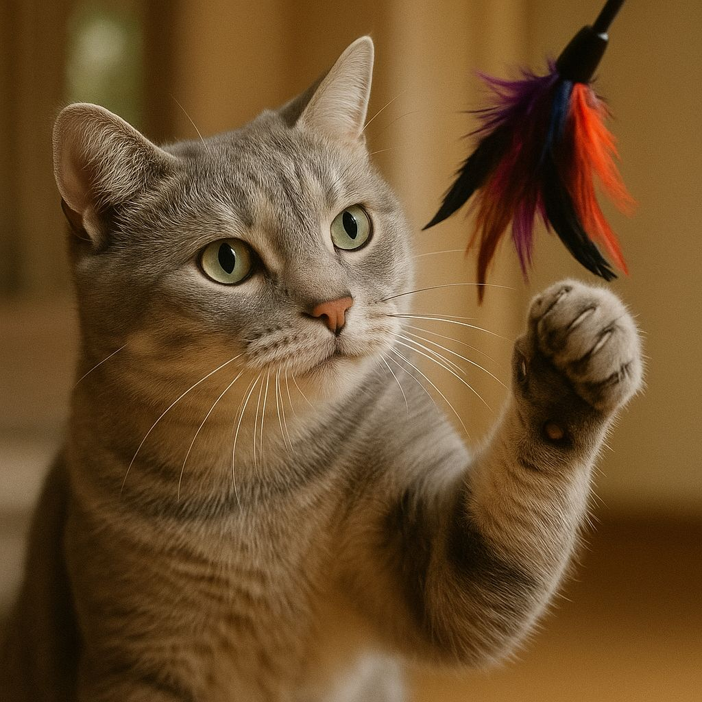
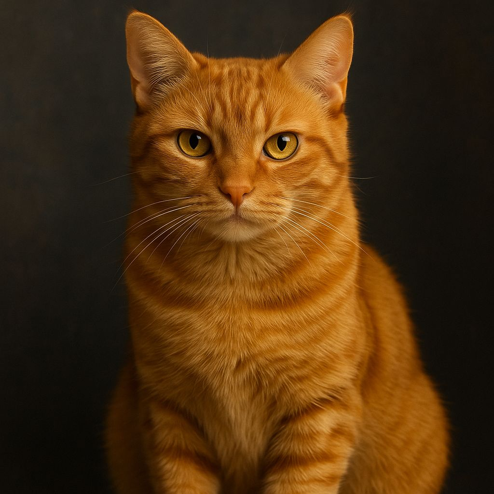
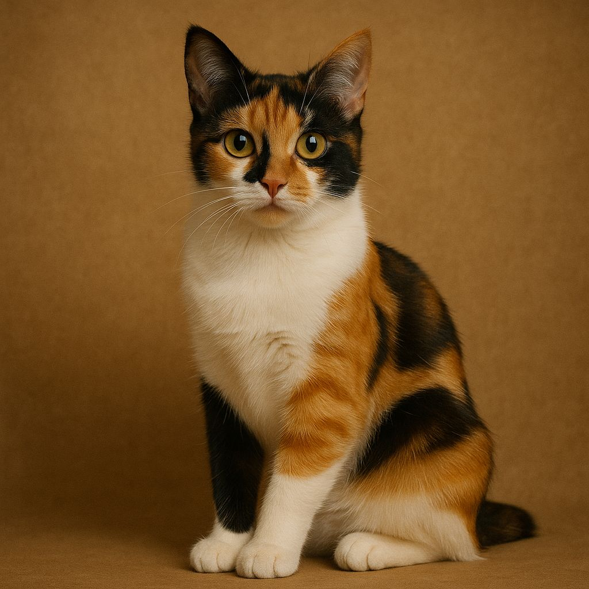
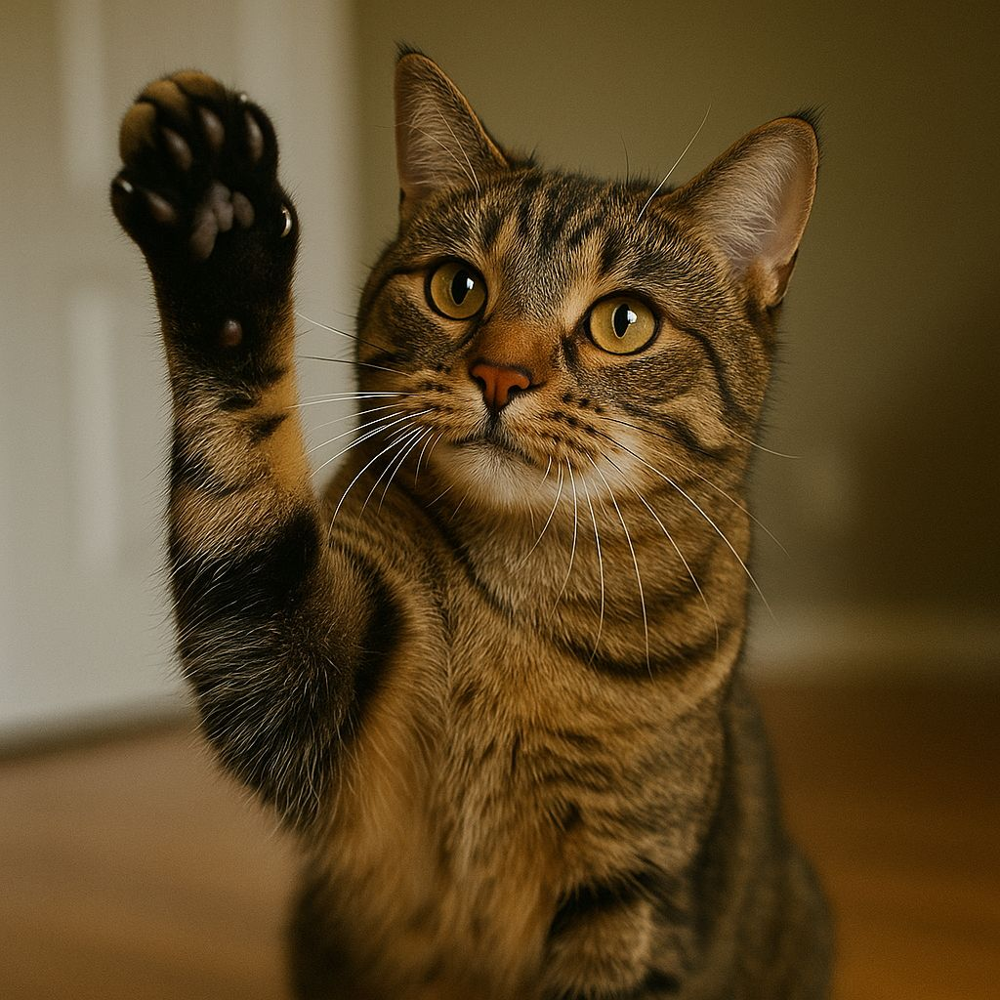
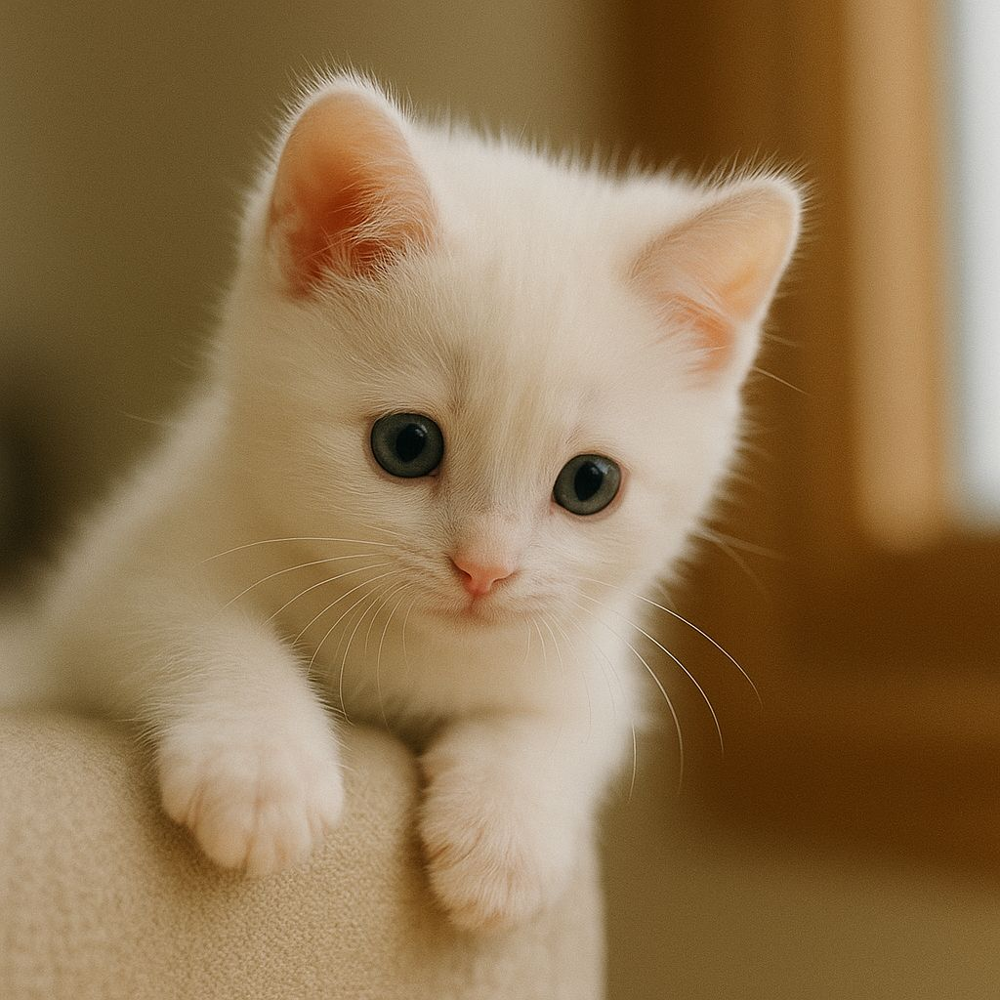
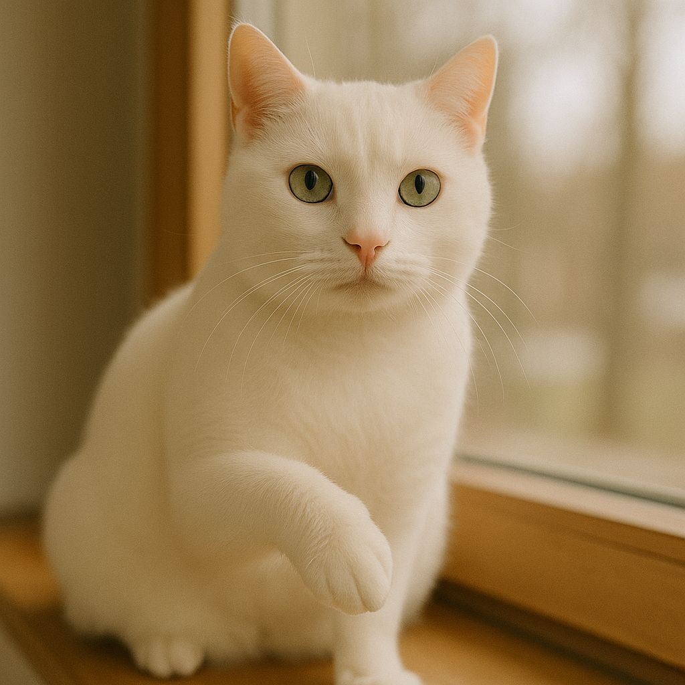
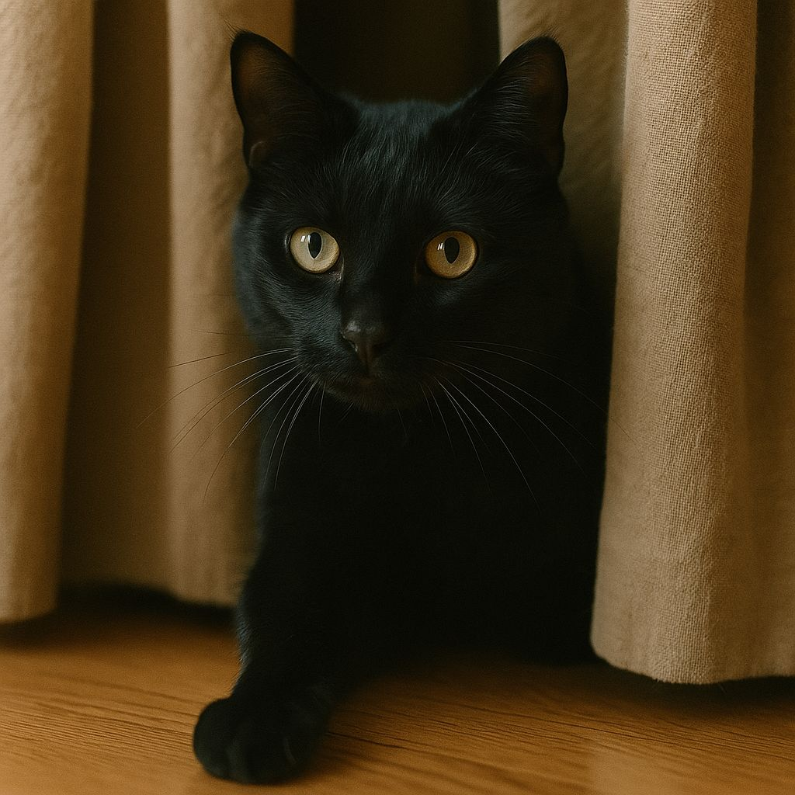
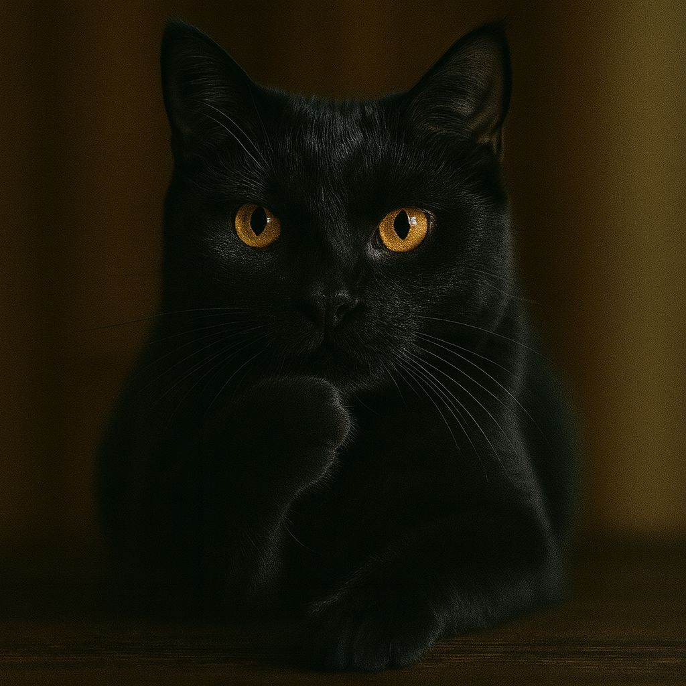

Ayla
Edad: 2 años.
Discapacidad: Leve sensibilidad en una patita trasera (camina un poco más lento).
Personalidad: Dulce y tranquila. Le encanta mirar por la ventana y seguir los rayos del sol.
Ideal para: Familias o personas que buscan una gata cariñosa y serena.
Curiosidad: Su ronroneo es tan suave que parece un arrullo.
“Si buscas paz, Ayla será tu refugio, porque a veces el amor más grande llega en silencio."

Simba
Edad: 1 año y medio.
Personalidad: Aventurero, valiente y un poco travieso.
Ideal para: Hogares activos donde pueda jugar y explorar.
Curiosidad: Le encanta dormir en lo alto, como un verdadero “rey de la casa”.
“Simba no necesita una selva, solo un hogar donde ser el rey del cariño."

Milo
Edad: 3 años.
Personalidad: Sociable, juguetón y muy curioso.
Ideal para: Familias con niños o con otros gatos.
Curiosidad: Siempre lleva su juguete favorito a quien quiere conquistar.
“Milo no busca solo un hogar, busca compañeros de juego para toda la vida. Donde hay amor, él siempre deja un juguete de regalo.”

Nala
Edad: 2 años.
Discapacidad: Leve problema cardíaco (controlado).
Personalidad: Elegante, protectora y muy leal.
Ideal para: Personas que buscan una compañera afectuosa.
Curiosidad: Tiene un maullido suave, pero sabe hacerse escuchar cuando quiere mimos.
“Nala no puede correr tanto como antes, pero su corazón late con más amor del que imaginas. Solo necesita un hogar donde la escuchen, la cuiden y la quieran por siempre.”

Cleo
Edad: 1 año.
Personalidad: Curiosa, juguetona y un poco diva.
Ideal para: Alguien que disfrute de una gata llena de energía.
Curiosidad: Le encanta mirarse en los espejos… ¡y posar para las fotos!
“Cleo no solo roba miradas, también corazones. Detrás de su elegancia hay una pequeña artista que solo necesita un hogar donde aplaudan su brillo.”

Tom
Edad: 3 años.
Personalidad: Bromista, ágil y lleno de energía.
Ideal para: Hogares donde pueda correr y jugar mucho.
Curiosidad: Persigue todo lo que se mueve, incluso su propia cola
“Tom siempre levanta la pata para saludar y robar sonrisas. Su energía es pura alegría, y su mayor truco es llenar de vida cualquier hogar donde lo adopten.”

Mochi
Edad: 8 meses.
Personalidad: Tierno, cariñoso y muy sociable.
Ideal para: Primeros adoptantes o familias con niños.
Curiosidad: Se queda dormido encima de cualquier manta suave.
"Mochi es pura dulzura envuelta en pelito blanco. Solo necesita un hogar donde sus siestas se llenen de caricias y sus sueños de amor verdadero.”

Toby
Edad: 5 años
Discapacidad: Pérdida parcial de olfato.
Personalidad: Tranquilo, noble y muy obediente.
Ideal para: Personas mayores o quienes busquen un gato relajado.
Curiosidad: Siempre se sienta al lado cuando nota que alguien está triste.
"Toby no necesita oler el mundo para entenderlo. Le basta un gesto de cariño para llenar la casa de calma y ternura infinita.”

Shadow
Edad: 2 años y medio.
Personalidad: Reservado al principio, pero muy cariñoso cuando confía.
Ideal para: Adoptantes pacientes y afectuosos.
Curiosidad: Le encanta esconderse y salir de sorpresa para jugar.
"Shadow no aparece de inmediato… pero cuando lo hace, se queda para siempre. Su amor silencioso es el más fiel de todos.”

Salem
Edad: 4 años.
Discapacidad: Problemas leve de audición (Parcialmente sordo).
Personalidad: Misterioso, inteligente y tranquilo.
Ideal para: Amantes del silencio y la compañía felina con carácter.
Curiosidad: Parece un gato de película: negro, brillante y con mirada encantadora.
"Salem no necesita oír para entender. Su mirada lo dice todo: está listo para escuchar con el corazón y acompañarte en silencio.”